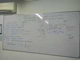

ü뮂Äçüíª Ingeniero de software
Desde el 2007 trabajo en la industria TI. Empecé en soporte técnica, fui webmaster (recuerdas ese puesto?) de algunos sitios web y manejando servidores linux. Después entré al desarrolo web, he desarrollado sitios y aplicaciones web usando Stacks como:
- LAMP (Linux, Apache, Mysql, and Php).
- JOTL (Java, Oracle DB, Tomcat, and Linux).
ü뮂Äçüè´ Profesor
Me gusta compartir mi conocimiento con los demás, desde 2015 soy profesor en colegios y universidades en Pereira y también enseño en mi canal de Youtube y en Platzi (Puedes ver más en Linkedin). Los temas que enseño en clase: Algoritmos, programación básica (estructurada), Programación orientada a objetos, Bases de datos, Seguridad informatica, Diseño y desarrollo web, Desarrollo frontend, Desarrollo backend, Ingeniería de Software.
ü뮂Äçüíª Proyectos personales
Algunos Proyectos, Algunos con su código en GitHub/Gitlab.
| Nombre | Descripción |
|---|---|
| ColombiaDev encuesta - 2020 | Análisis de los datos de la encuesta de Colombia Dev . dashboard |
| spacex-platzi - 2020 | Aplicacion web que muestra info de SpaceX usando la APi de SpaceX. code |
| Juego de la vida JS - 2020 | Juego de la vida de John Conway - en Javascript . código |
| Torre mentors - 2020 | Torre mentors - encuentra tu próxim@ mentor@ (En la red Torre). código |
| Piedra, Papel o tijera - 2020 | Juego de Piedra, papel o tijera en Java |
| Honeygram - 2020 | Clon de Instagram con Svelte, puedes verlo en vivo, también con Sapper,mira el código fuente |
| To Do App - 2020 | Aplicación To do (lista tareas), hecha con: MongoDb, Mongoose, ExpressJs, Nodejs, y Ejs |
| Red social - 2019 | mini Red Social en Java, hace parte del curso de Java con persistencia de datos |
| Gatos App - 2019 | Aplicación Java para ver gatos aleatorios desde una API, hace parte del curso de Java con persistencia de datos |
| Vulnerabilidad en el servicio de facturas de Tigo Une - 2018 | Vulnerabilidad en el servicio de facturas de Tigo Une |
| Css Dogs - 2017 | Sitio web estático para enseñar CSS. |
| Hemianopsias - 2015 | interfáz visual para comprender deficiencias visuales. |
| Travel planning - 2014 | Aplicación para viajeros pones un lugar, un presupuesto, y la app te da opciones de alimentación, transporte, hospedaje y entretenimiento. |
| Whatsapp Status - 2014 | web para el ver el estado de whatsapp de cualquier número |
| Sistema de referidos en php y mysql - 2014 | Sistema de referidos en php y mysql con 3 niveles de jerarquía |
| Wifi auditor portado a Mac OS - 2014 | Wifi auditorportado a Mac OS |
| Simulador Peajes - 2009 | Simulador Peajes realizado para un proyecto de grado de estudiantes de administración de empresas en 2009 |
üìñ Traductor y contribuidor
 también disfruto cuando ayudo
comunidades or projectos con constribuciones (como Guía Local en Google
Maps) y traducciones (De inglés a español).
también disfruto cuando ayudo
comunidades or projectos con constribuciones (como Guía Local en Google
Maps) y traducciones (De inglés a español).
| Nombre | Descripción |
|---|---|
| Ayudé a traducir Twitter a español en 2009 | |
| Artículo sobre la Deuda técnica de Martin Fowler | Traducí el artículo a español |
| Startup PlayBook | Con el PlatziTeam realizamos la traducción de la guía de Startups a español. |
| My Band (xiaomi) Map | Traducida a español |
| Artículo sobre OKR en Wikipedia | Traducida a español |
üó£Ô∏è Speaker
Charlas en eventos y conferencias.
| Nombre | Descripción |
|---|---|
| Desplegando apps en minutos - 2019 | hablando sobre Digital Ocean (proveedor de nube) |
| Introducción a Owasp - 2019 | Introdución a OWASP (open web application security project) Slides |
| Introducción a git y gitlab - 2019 | hablando sobre Git y Gitlab |
| Cuando la seguridad es lo último - 2018 | Fallos de seguridad que encontré en algunas universidades |
| Seguridad informática - 2018 | Hablando sobre cómo iniciar en seguridad informática |
| Hacking demo - 2018 | En Campus Party Colombia mostré algunas técnicas de hacking y cómo protegerse |
| Teletrabajo - 2018 | Cómo hacer teletrabajo |
| mamá estoy en TV - 2018 | Estuve en Telecafe (Canal de TV regional) hablando sobre seguridad informática |
| Hackeando el sistema de votación - 2018 | "Hackeando" un sistema de votaciones. |
| Técnicas de Hacking - 2018 | Técnicas de hacking comunes |
| Hacking con motores de búsqueda - 2018 | Taller de Google Hacking |
| hacking a 1 clic de distancia - 2017 | En el Barcamp security Edition 2017 hablando sobre Google hacking y Shodan |
| De http a https - 2017 | De http a https |
| Buscando en el internet de las cosas - 2017 | Hablando de seguridad en IoT (internet de las cosas), con Shodan |
| El amplio mundo de las TICs - 2016 | hablando sobre el mundo de las TICs |
| Travel Planning Pitch - 2014 | En el StartupWeekend Pereira 2014, Hablé con los mentores sobre travel Planning (app para viajeros) |
| Seguridad en Wordpress - 2013 | En el Barcamp Security 2013 Hablando sobre seguridad en Wordpress |
| Ubuntu y alternativas libres a aplicaciones - 2009 | En el Flisol (festival latinoamericano de instalación de software libre) hablé sobre Ubuntu (linux distro) Aplicaciones Open Source |